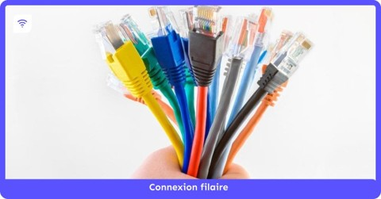
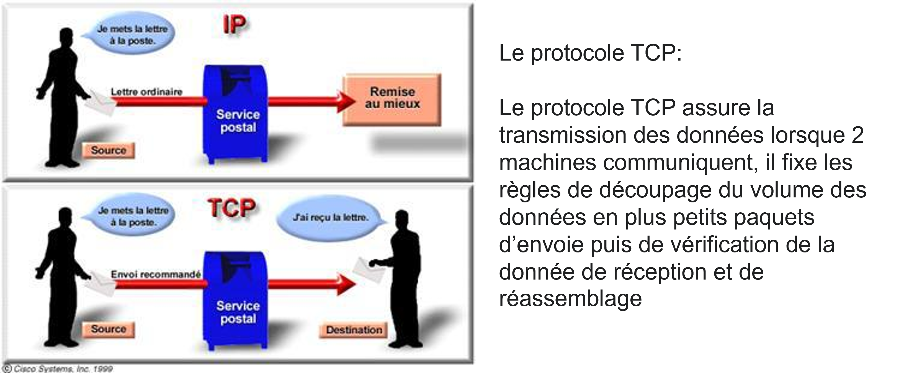

Internet est un réseau qui relie de nombreux réseaux informatiques locaux, ou circulent des données.
Un réseau informatique est un groupement de liens (câbles, ondes...) permettant de connecter des équipements (ordinateurs, smartphones...) entre eux.
Différents types de liaisons permettent aux données de transiter à travers un réseau.
Les liaisons filaires :

Les liaisons hertziennes:
Les protocoles TCP/IP: sont des protocoles distincts qui permettent ensemble de garantir la transmission effective des données à leur destination prévue au sein d’un réseau.
Le protocole IP a pour rôle de conduire les données à travers le réseau, en les faisant transiter d’un émetteur vers un récepteur, les 2 ont une adresse IP unique qui permet au protocole IP de se repérer à travers le réseau
Le protocole TCP assure la transmission des données lorsque 2 machines communiquent, il fixe les règles de découpage du volume des données en plus petits paquets d’envoie puis de vérification de la donnée de réception et de réassemblage
L’architecture des échanges. Le shéma de gauche représente le shéma client-serveur et le shéma de droite représente le shéma pair à pair.
.jpg)